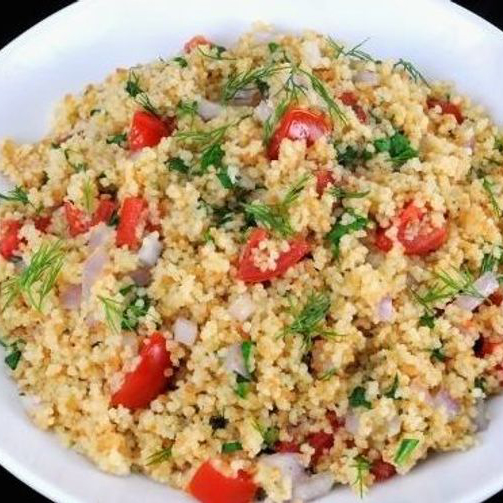

Cuscús con pollo y especias
 La preparación de este alimento a base de sémola de trigo es extremadamente fácil y las recetas
que se pueden elaborar son muy variadas y versátiles. Atrévete a prepararlo, sólo necesitarás (para dos personas):
Ingredientes:
- 200 gramos de cuscús (sémola de trigo)
- Media pechuga de pollo sin grasa
- 100 gramos de tomates cherry
- Una pizca de comino, cúrcuma, sal y pimienta
- Un pequeño atado de cilantro
- 40 gramos de maní salado
- Un poco de aceite vegetal